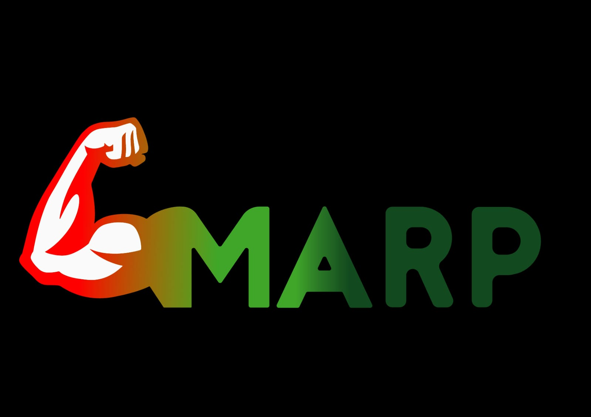

MARP
Marp (Mechanical Aid Rehabilitation Prototype), como lo indica su nombre en ingles, es el prototipo de un instrumento de rehabilitación de mano. Se usaria en los casos de que alguien sufra de alguna de lesión o padezca de algún tipo de enfermedad neurodegenerativa, así como daño nervioso derivado del ACV que afectea las conexiones musculares entre el cerebro y el músculo, reduciendo así la actividad eléctrica. El objetivo principal de MARP es cumplir la función de una primer instancia de rehabilitación para pacientes con muy poca / nula movilidad.
